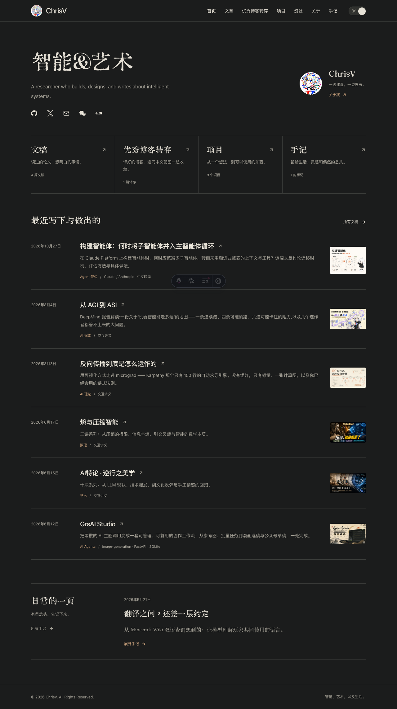

目标：让第一次来的人知道你在研究什么，让再次来的人更快找到新文章。以下为使用现有内容制作的视觉小样，供选择改动幅度；尚未替换网站。推荐 B：保留深色书卷气，把阅读放在首屏中心。
保留全部结构。统一辅助文字为 14px，压缩首屏空白，修整长分类名称的换行。影响：首页与共享导航的间距。
研究智能系统，也把想法做成作品。这里记录论文、工具，以及日常的思考。
什么时候需要分工，什么时候应该收回主循环？读懂上下文、工具与评估之间的取舍。
一份关于机器智能能走多远的地图。
从 micrograd 的 100 行代码，理解自动求导。
保留字体、深色与暖金。分类压成一行目录，最新文章获得更强层级。推广到文章与项目列表时，沿用日期、标题、摘要的阅读顺序。
改为浅色研究手札，以内容封面和大标题为主角。品牌名称保留；导航、列表、关于页与阅读页需要同步调整。
查看桌面原图查看手机原图
